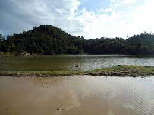

SHYAMALA TAL

- SHYAMALA, TANKPUR UTTARAKHAND
- Locality/village : Tanakpur
- State : Uttarakhand
- Country : India
- Nearest City/Town : Sharda valley town
- Best Season To Visit : All
- Languages : Hindi & English
- Timings : 9 AM to 11.30 AM and 5 PM to 8.30 PM.
- Photography : Allowed
Shyamala Tal
ShyamLa Tal (Vivekananda Ashram), Champawat Overview
Situated at an altitude of 1500 meters in the foothills of Garhwal Himalayas, Shyamla Tal is a beautiful lake town with umpteen amounts of greenery and freshness to it. Alongside the lake there is a Swami Vivekanand Ashram which is one of the highlights of the place and is a great for some meditation and self-exploration.
Shyamla Tal or Shyamla lake has been named so as it looks like a mirror to the sky reflecting its blue tint all over itself. Besides the lake there is an old ashram dedicated to Sri Vivekanand and managed by the Ramakrishna Mission. Sitting by the lake and staring in to the vast greenery and the Himalayan peaks one cannot help but be awestruck by the beauty of the place.
How to reach
By Road
Champawat is accessible by road as well, however, the journey by road is very tedious and not much recommended. Champawat is about 455 km from Delhi. The shortest route will be to first reach Haldwani (294 km) then to Bhowali (29 km from Haldwani) and then via Bhowali to Champawat ( 132 km from Bhowali) but the terrain makes it an unfavorable bet to travel by road. Better options would be by train or flight, but if you’re willing to go by road, be prepared for a tough ride.
By Rail
Regular trains like the Sampark Kranti, Shatabdi and the Garib Rath that pass through the Kathgodam station, that is about 58 kms away from Champawat and the Tanakpur station, about 75 kms away. Your best bet is to cover the distance between is to take a tourist bus, since many individual cab drivers are not ready to drive to Champawat, since it’s a lesser known tourist destination.
By Air
The nearest airport is located at Pantnagar, about 160 kms away, from where you can easily hire cabs, taxis, minivans, buses : both private and government run to reach Champawat.
Explore more